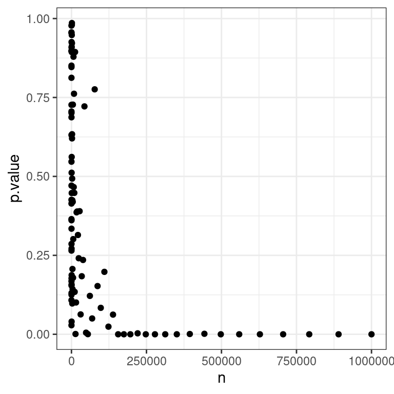
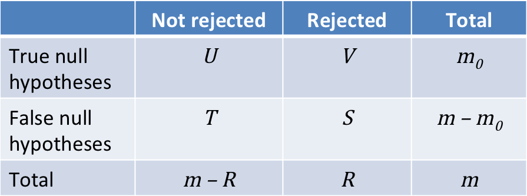
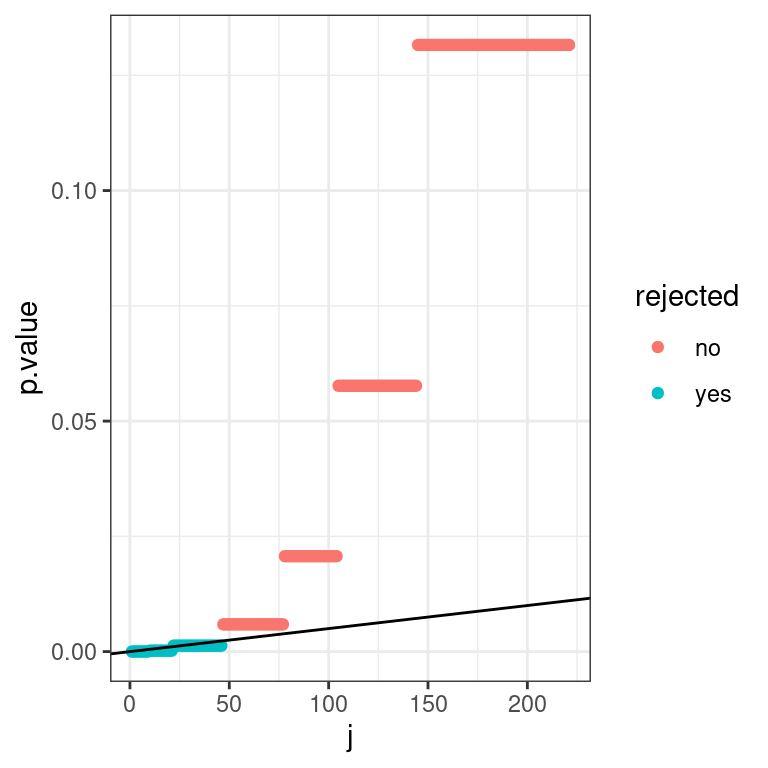

Chapter 9 Statistical Assessments for Big Data
In the last two chapters, we took an in depth look at how to assess the statistical significance of patterns in our data. We know how to compute and interpret \(P\)-values to test specific hypotheses in the context of relatively small datasets.
In this chapter, we will look at what happens when we move to a world where we have large datasets, and are not sure beforehand which specific hypothesis we want to test. After reading this chapter, you should:
- Understand what an effect size is
- Be able to explain the difference between statistical significance and practical importance
- Understand the problem of multiple testing
- Define the terms FWER and FDR
- Apply the Bonferroni and Benjamim-Hochberg corrections and understand the difference between them
9.1 Motivation: Statistical Significance in a Big Data context
Imagine a huge consortium of scientists gathers a variety of different demographic, social and health data from millions of Germans. After many days of analysis, they report that:
“There is a statistically significant association (\(P<0.05\)) between drinking coffee and all-cause mortality in university students aged 19-25 whose birthday falls in an odd-numbered month”
If you are a coffee drinking university student aged 19-25 who was born in an odd-numbered month, should you be worried?
In this chapter, we will see some reasons why the sentence above - without further information - is not a convincing reason to swear off Espresso forever.
We will look at two major issues stemming from big data applications. The first issues is the issue of small effect size detection, which is a consequence of having large sample sizes (“large n,” referring to the numbers of rows of a data matrix). The second issue is the issue of multiple testing, which is consequence of assessing many variables (“large p,” referring to the number of columns of a data matrix).
9.2 Effect Size: Actually important or just significant?
The first issue we encounter in a big data world is the problem that statistical significance does not necessarily reflect effects of practical relevance. To understand this distinction, we first need to introduce the notion of effect size.
The effect size is a quantitative measure of the magnitude of a phenomenon. Examples of effect sizes are the correlation between two variables, the regression coefficient in a regression, the mean difference, or even the risk with which something happens, such as how many people survive after a heart attack for every one person that does not survive.
The effect size determines whether an effect is actually important. If we discover that drinking one cup of coffee per day decreases life expectancy by two years on average, this is a substantial effect with large implications for millions of people. If, by contrast, we find that life expectancy is only decreased if you drink 20 cups or more per day, then this is largely irrelevant, as probably no sane person would do this.
9.2.1 The relationship of sample size and significance
Assume now that we have a very small effect size. For instance, assume we have two groups, \(X\) and \(Y\), that are both normally distributed with variance 1. But \(E[X] = \mu_x = 0\) whereas \(E[Y]=\mu_x=0.01\). We sample from these distribution and do a \(t\)-test to try to reject the null hypothesis that \(E[X]=E[Y]\) (i.e. the effect size is exactly 0).
If our sample size is small, e.g. \(n_x=n_y=10\), the difference in means is unlikely to be statistically significant.
mu_x <- 0
mu_y <- 0.01
n <- 10
x <- rnorm(n, mu_x)
y <- rnorm(n, mu_y)
dt <- data.table(
value = c(x,y),
group =rep(c("x", "y"), each=n)
)
ggplot(dt, aes(x=group, y=value)) +
geom_boxplot() +
geom_jitter() +
ggtitle(paste0("n=",n)) + mytheme
t.test(x,y)$p.value## [1] 0.1259009But things change as we start to increase the sample size:
ns <- round(10^seq(1,6, length.out=100)) # a exponential grid of values of n
pvs <- sapply( ns, # for each N...
function(n){
x <- rnorm(n, mu_x) # draw N values of x according to N(mu_x, 1)
y <- rnorm(n, mu_y) # draw N values of y according to N(mu_y, 1)
t.test(x, y)$p.value # Welch t-test
}
)
data.table(n=ns, p.value=pvs) %>%
ggplot(aes(x=n , y=p.value)) + geom_point() + mytheme
We see that as the sample size gets bigger and bigger, the \(P\)-values quickly drop.
Once we have a million observations, we can easily reject the null hypothesis that the true effect is zero:

The conclusion is that, as the sample size grows, any true effect, no matter how small, will be detected.
This creates a problem. In reality, the null hypothesis, will seldom be literally true. Because we live in a complex and interconnected world, many variables will be somewhat correlated, even if the correlation is very weak. The effect size will rarely be exactly \(0.0\).
This means, if our dataset is big enough (i.e. many hundreds of thousands of datapoints), it is likely that whatever association we test, it will be significant. But many of these associations will likely be too small to be of any practical importance.
9.2.2 Report P-value, effect size, and plot
Because of this, only reporting that an association is statistically significant is misleading and not particularly helpful. To avoid this problem, we should always report the \(P\)-value, an estimate of the effect size and a plot of our data that supports our conclusions.
9.3 Multiple Testing
In addition to the problem of detecting very small effects, big data also poses the problem of detecting false effects due to multiple testing. We will first discuss why multiple testing can undermine the conclusions we derive from data. Then we will explore ways to guard against being mislead in this way, using a simulated dataset as an example.
9.3.1 Multiple testing in real life: p-Hacking and fishing expeditions
Expressed very simply, multiple testing refers to the issue that, if we test enough hypotheses at a given significance level, say \(\alpha=0.05\), we are bound to eventually get a significant result, even if the null hypothesis is always true.
Multiple testing is an ever-present problem also in real life data analysis. It appears particularly once we start stratifying large datasets into subgroups, testing a seperate hypothesis for each one.
Say we want to test the effect of a new medication. We find it has no effect in the general population. But maybe it only works in women? Maybe it affects people of different ages differently? Maybe smokers metabolize it differently to non-smokers? If our data is large enough and we keep stratifying it into subgroups, we are bound to find one where \(P<0.05\), even if our medication is completely useless.
The following xkcd comic illustrates the issue in a humorous way:


This phenomenon is often referred to as “\(P\)-hacking” or fishing expedition. It refers to the practice of testing different hypotheses until one finally finds one that yields a significant \(P\)-value. For more detail on this issue, the following article by FiveThirtyEight gives a good overview. In particular, you can interactively “Hack Your Way To Scientific Glory.”
This is not to say that stratifying data and analyzing it in different ways is a bad thing. But it does mean that, when we do so, we should make sure that we apply a correction that accounts for the multiple tests we have performed.
9.3.2 The Land of Counterfeit (fake) coins
To see multiple testing in action on a concrete example, and to explore ways to correct for it, we simulate a dataset based on flipping coins. We will tell a little fairytale to make the details less dry:
Long, long ago, in a country far far away, a king suspected counterfeit coins were circulating in his kingdom. Original coins were fair: When tossed, each coin has an equal chance to come up heads or tails. Counterfeits instead were more biased towards more heads. The king requested each one of his 1,000 subjects to toss his or her coin (subjects owned only one coin) 20 times.
9.3.3 Simulation
Here we simulate data for this scenario. We (not the king/queen) know that in reality 90% of the subjects own a fair coin. For simplicity, we assume that all counterfeits have probability 0.8 for the head.
library(data.table)
library(ggplot2)
library(magrittr)
library(ggbeeswarm)
set.seed(10)
m <- 1e3
m0 <- 0.9*m
n <- 20
fair <- c(rep("fair", m0), rep("biased", m-m0))
heads <- rbinom(m,n,ifelse(fair=="fair",0.5,0.8))
dt <- data.table(fair=fair, heads=heads) dt## fair heads
## 1: fair 10
## 2: fair 9
## 3: fair 10
## 4: fair 11
## 5: fair 7
## ---
## 996: biased 15
## 997: biased 18
## 998: biased 16
## 999: biased 18
## 1000: biased 12We look now at the distribution of heads for the fair and the biased coins.
dt2 <- dt[, .N, by=.(fair,heads)]
dt2 %>% ggplot(aes(heads,N)) +
geom_bar(stat="identity") +
facet_wrap(~ fair, nrow=2) +
scale_x_continuous("Heads", 0:n) +
scale_y_continuous("Coins") +
mytheme
9.3.4 Nominal p-values
The king declares: “I presume innocence, i.e. I will consider the null hypothesis that each coin is fair. I will reject this hypothesis using a one-sided binomial test at p-value <=0.05.”
The king computes the p-values.
dt[,
p.value := sapply(
heads,
function(x)
binom.test(x, n = n, alternative = "greater")$p.value
)
]
dt## fair heads p.value
## 1: fair 10 0.5880985260
## 2: fair 9 0.7482776642
## 3: fair 10 0.5880985260
## 4: fair 11 0.4119014740
## 5: fair 7 0.9423408508
## ---
## 996: biased 15 0.0206947327
## 997: biased 18 0.0002012253
## 998: biased 16 0.0059089661
## 999: biased 18 0.0002012253
## 1000: biased 12 0.2517223358We can compute the number of rejected tests:
sum(dt$p.value<=0.05)## [1] 104The king is furious. There are 104 declared guilty. He requests the death penalty for all of them.
9.3.4.1 Explanation: nominal \(P\)-values can lead to many false rejections when testing multiple hypotheses
Since we (simulators) know the truth, we can compute the contingency table of rejected tests versus the ground truth:
table(dt[,.(fair, rejected = p.value<=0.05)])## rejected
## fair FALSE TRUE
## biased 28 72
## fair 868 32We see that this will mean that 32 innocent subjects will be punished, despite the fact that the King used rigorous statistical testing against a null hypothesis of innocence to establish guilt. What went wrong?
To explore what is happening here, we first need to note a very important fact about \(P\)-values: under the null hypothesis, we have that \(p(P<\alpha|H_0) = \alpha\).
To see why, let us first recall the definition of the \(P\)-value: it is the probability of obtaining a test statistic the same as or more extreme than the one we actually observed, under the assumption that the null hypothesis is true. Assume, for simplicity, we are doing a right-tailed one-sided test. The \(P\)-value is:
\(P = p(T \geq T_\text{obs}| H_0)\)
Let \(T_{0.05}\) be a test statistic just big enough so that:
\(0.05 = p(T \geq T_\text{0.05}| H_0)\)
Now, given this definition, what is the probability under the null hypothesis of getting \(P<0.05\)?
Well, to get a \(P\)-value smaller than \(0.05\), we need to observe a test statistic \(T\) bigger than \(T_\text{0.05}\). And we know that under the null hypothesis the probability of that happening is:
\(p(T \geq T_\text{0.05}| H_0)\)
which we just said is equal to \(0.05\)! So \(p(P<0.05|H_0) = 0.05\), and the same logic generalizes for any other \(\alpha \in [0,1]\).
This, in turn, means that when we test 900 fair coins and reject the null hypothesis that the coin is fair whenever \(P<0.05\), then on average we will reject the null hypothesis about \(5\%\) of the time, so \(900*0.05=45\) times. Thus, in some sense the King actually got lucky that he “only” falsely accused 72.
Another way of stating this fact is to say that, under the null hypothesis, the \(P\)-value follows a uniform distribution on the \([0,1]\) interval. Figure 9.1 illustrates the \(P\)-value distribution, compared to the \([0,1]\) uniform distribution, for the fair and for the biased coins:
ggplot(dt, aes(sample = p.value)) +
# we make a qqplot comparing the p-values with the [0,1] uniform
geom_qq(distribution = stats::qunif) +
# we add a diagonal
geom_abline(slope=1, intercept=0) +
# we make the plot separately for fair and biased coins
facet_wrap(~fair) +
mytheme
Figure 9.1: P-value Q-Q plots against the uniform distribution for the fair and the biased coins.
We see that the \(P\)-values for the fair coins match the uniform distribution quite well (values along diagonal). In contrast, the p-values for the biased coins are excessively small compared to the uniform distribution. This is exactly what we want: small p-values when the null hypothesis does not hold. (Note that the distribution of p-values for discrete statistics actually shows these stairs due to ties. One could visually fix it but this is not a major point).
9.3.5 Family-wise error rate
The queen, who is well-versed in matters of probability, is rightfully appalled at the prospect of many innocent subjects being executed.
She states: “If they were all innocent, you would declare \(0.05*1000=50\) subjects guilty and falsely sentence them to death. We shall not accept that any innocent person is killed.”
King: “Mmmh, good point. But we cannot be 100% sure. What if I make sure that there is at most 5% chance that an innocent person is mistakenly killed?”
Queen: “Fine.”
Now the King must control such that the probability that one or more innocent is killed is smaller than 5%. He uses Bonferroni correction, which amounts to multiplying the \(P\)-values by m=1,000 or setting them to 1, whichever is smaller (because probability can’t be larger than 1).
dt[ , bonferroni := p.adjust(p.value, method="bonferroni")]
dt## fair heads p.value bonferroni
## 1: fair 10 0.5880985260 1.0000000
## 2: fair 9 0.7482776642 1.0000000
## 3: fair 10 0.5880985260 1.0000000
## 4: fair 11 0.4119014740 1.0000000
## 5: fair 7 0.9423408508 1.0000000
## ---
## 996: biased 15 0.0206947327 1.0000000
## 997: biased 18 0.0002012253 0.2012253
## 998: biased 16 0.0059089661 1.0000000
## 999: biased 18 0.0002012253 0.2012253
## 1000: biased 12 0.2517223358 1.0000000Here is the new contingency table. In this case, no innocent person was killed (He did kill 9 guilty people). It could have happened, though, but with less than 5% chance.
table(dt[,.(fair, rejected = bonferroni<=0.05)])## rejected
## fair FALSE TRUE
## biased 91 9
## fair 900 09.3.5.1 Explanation: the Bonferroni correction is a very conservative method to address multiple testing
To understand how the correction the King applied works, and why it makes sense, we first introduce some notation:

The Queen wants to keep \(V\), the number of true null hypotheses which were falsely rejected (leading to an innocent being executed), as low as possible. The King can do that by controlling the so-called Family-wise error rate:
Family-wise error rate (FWER): \(p(V>0)\), the probability of one or more false positives (i.e. the probability of one or more innocent being executed).
Specifically, the King has opted to keep the FWER below \(\alpha=0.05\).
We have just established that, under the null hypothesis, if we do \(m\) tests, and reject if \(P<\alpha\), then we will falsely reject about \(m\alpha\) times. To control the FWER, the so-called Bonferroni correction is a lot more demanding, and only reject if \(P<\frac{\alpha}{m}\).
More formally, suppose we conduct our \(m\) hypothesis tests for each \(g=1,...,m\) , producing each a p-value \(P_g\). Then the Bonferroni-adjusted \(P\)-values are: \[\tilde P_g = \min \{mP_g,\ 1\}\]
Selecting all tests with \(\tilde P_g \le \alpha\) controls the FWER at level \(\alpha\) , ie., \(p(V>0)\le \alpha\) .
In R we can adjust the \(P\)-values using:
p.adjust(p_values, method = "bonferroni")
The proof goes as follows. We assume to have applied Bonferroni correction, i.e. that we have rejected all hypotheses \(i\) such that \(P_i<\frac{\alpha}{m}\). We then start from the definition: \(\text{FWER} = p(V>0)\) which is the probability that at least one of the true null hypotheses got rejected:
\[\begin{align} \text{FWER} &= p(V>0) \\ &= p\left(\{H_{0,1} \text{ rejected\} or } \{H_{0,2}\text{ rejected\} or ... } \{H_{0,m_0} \text{ rejected}\}\right) \end{align}\]
Now, among a set of binary random events (here rejection, or not, of each true null hypothesis), the probability that at least one random event realizes is less than or equal to the sum of the probabilities of each random event to realize.24 It would be equal to the sum, only if those events were mutually exclusive. We cannot exclude the possibility that rejections of the true null hypotheses are mutually exclusive although in practice this is a very conservative assumption. So, conservatively, we have the following upper bound:
\[\begin{align} \text{FWER} & \leq \sum_{i=1}^{m_0}p\left(H_{0,i} \text{ rejected}\right) \end{align}\]
What is \(p\left(H_{0,i} \text{ rejected}\right)\) when \(i=1...m_0\), i.e. when \(i\) is the index of a true null hypothesis? Having applied Bonferroni’s correction means that, for all \(i\): \[p\left(H_{0,i} \text{ rejected}\right) = p\left(P_i\leq\frac \alpha m\right)\] Moreover, by definition of the p-value, we have that \(p\left(P_i\leq\frac \alpha m\right) = \frac \alpha m\) for all \(i=1...m_0\), as these are the indices of the true null hypotheses. Hence we get:
\[\begin{align} \text{FWER} &\leq m_0 \frac \alpha m \leq \alpha \end{align}\]
This shows that the Bonferroni correction controls the FWER at the level \(\alpha\).
This control does not require any assumption about dependence among the \(P\)-values or about how many of the null hypotheses are true. The drawback is that it is very conservative. If we run 1,000 tests at \(\alpha=0.05\), we will only reject if the (unadjusted) \(P\)-value is smaller than \(0.00005\).
9.3.6 False Discovery Rate
The king sleeps on it and comes back angry to the queen.
King:" If they were all innocent as you assumed, there should have been 50 with a p-value less than 0.05 in the first place. But they were instead 104. There are still a lot of counterfeiters unpunished. What if I introduced a fine rather than the death penalty?"
Queen: “That is more reasonable. It would be tolerable that no more than 5% of fined subjects are actually innocent.”
The king now needs to control for the proportion of innocent people among the subjects called guilty (rejected = True). He uses the False Discovery Rate with Benjamini-Hochberg correction. This controls the expected value of that proportion.
dt[ , BH := p.adjust(p.value, method="BH")]
dt## fair heads p.value bonferroni BH
## 1: fair 10 0.5880985260 1.0000000 0.942465587
## 2: fair 9 0.7482776642 1.0000000 0.965519567
## 3: fair 10 0.5880985260 1.0000000 0.942465587
## 4: fair 11 0.4119014740 1.0000000 0.858128071
## 5: fair 7 0.9423408508 1.0000000 0.992982983
## ---
## 996: biased 15 0.0206947327 1.0000000 0.198987814
## 997: biased 18 0.0002012253 0.2012253 0.009582156
## 998: biased 16 0.0059089661 1.0000000 0.076739819
## 999: biased 18 0.0002012253 0.2012253 0.009582156
## 1000: biased 12 0.2517223358 1.0000000 0.765113483Here is the new contingency table:
table(dt[,.(fair, rejected = BH<=0.05)])## rejected
## fair FALSE TRUE
## biased 56 44
## fair 898 2A higher number of counterfeiters were discovered, while the proportion of innocents among the subjects declared guilty (2 out of 46) remained lower than about 5%.
9.3.6.1 Explanation: the Benjamini-Hochberg correction controls the False Discovery Rate
When applying the Bonferroni correction, we took a very conservative view: we created a worst-case scenario where everyone was innocent, and then minimized the probability of innocents being executed based on this assumption.
But everyone in the kingdom can see that this worst-case scenario is not correct by looking at the Q-Q plot (this time including all subjects, and not split by the innocent ones and the non-innocent:
Figure 9.2: P-value Q-Q plots against the uniform distribution for the entire population.
We notice a deviation from the assumption of uniformity at the low end of the distribution. This is due to the presence of the guilty subjects, whose coins do not obey the null hypothesis (the entire population is a mixture of fair and unfair coins, whose respective Q-Q plots are shown in Figure 9.1). If we apply the Bonferroni correction, very few of these will be punished. Controlling the Family-wise error rate ensures we have few false positives, but it comes at the cost of many false negatives.
Instead of conservatively minimizing the probability of false positives, the Benjamini-Hochberg correction25 takes a more balanced view and instead controls the so-called False discovery rate (FDR) defined as the the expected fraction of false positives among all discoveries:
\[\operatorname{FDR} = E[\frac{V}{\max(R,\ 1)}]\], where \(\max(R,\ 1)\) ensures the denominator to not be 0.
To do this, we first order our (unadjusted) \(P\)-values. Let the ordered unadjusted \(P\)-values be: \(P_1 \le P_2 \le \ ... \ \le P_m\). Let \(j\) refer to a rank in this ordering, so \(P_j\) is the j-th smallest \(P\)-value, and \(H_{0,j}\) is the respective null hypothesis.
To control the FDR at level \(\alpha\), we let:
\[j^* = \max\{j:P_j \le \frac{j\alpha}{m}\}\]
And we reject \(H_{0,j}\) if \(j \leq j^*\).
Why does this control the FDR?
We say there are \(m_0\) hypotheses where \(H_{0,j}\) is true (in our example \(m_0=900\), out of \(m=1000\) tests we conduct). As we discussed, when \(H_0\) is true, the corresponding \(P\)-value follows a uniform distribution (assuming independence).
This means that on average \(m_0 \frac{j^*\alpha}{m}\) \(P\)-values of true null hypotheses will fall into the interval \([0, \frac{j^*\alpha}{m}]\). In other words, we expect:
\[m_0 \frac{j^*\alpha}{m}\]
false rejections. Overall, we reject \(j^*\) times. Thus we get an FDR of:
\[\frac{ m_0 \frac{j^*\alpha}{m}}{j^*} = \frac{m_0}{m} \alpha \leq \alpha\]
The Benjamini-Hochberg correction is valid for independent test statistics and some types of dependence26
In R we do:
p.adjust(p_values, method = "BH")
We can also do the Benjamini-Hochberg correction graphically. For this we plot the rank \(j\) of \(P\)-values against their actual value:
dt_rank <- data.table(p.value = sort(dt$p.value), j = 1:1000)
ggplot(data=dt_rank, aes(x=j,y=p.value)) + geom_point() + mytheme
Note the visual similarity with the Q-Q plot.
Next we draw a line with slope \(\frac{\alpha}{m}\) and find the largest \(P\)-value that falls below this line. We then reject for this test and all those with smaller \(P\)-values:
dt_rank[ , BH := p.adjust(p.value, method="BH")]
dt_rank[ , rejected := ifelse(BH<=0.05, "yes", "no")]
ggplot(data=dt_rank) + geom_point(aes(x=j,y=p.value,color=rejected)) +
geom_abline(aes(intercept=0, slope=0.05/1000)) +
#geom_label(aes(x= 150, y=0.04,label="Slope: (j*alpha)/m")) +
mytheme
We zoom in a bit on the lower quadrant to make it more clear:

9.3.7 Overview figure
The following figure compares the methods once more:

As expected, we see that the nominal p-value cutoff is the most lenient, the FWER one (Bonferroni) the most stringent and the FDR ones (Benjamini-Hochberg) is intermediate.
9.4 Conclusions
In this chapter, we saw some reasons why we need to be careful when we apply hypothesis testing procedures in a big data context. Specifically we saw that as the sample size increases, even very small effects may become significant, but that does not mean that they actually matter. Moreover, we saw that when we run many tests, some are bound to reject the null, even if the null is always true. We thus need to apply a correction.
Given what we learnt, let us return to the original question:
Scientists report that:
"There is a statistically signficant association ($P<0.05$) between drinking coffee and all-cause mortality in TUM students aged 19-25 whose birthday falls in an odd-numbered month"
If you are a coffee drinking TUM student aged 19-25 who was born in an odd-numbered month, should you be worried?We now know that we should be skeptical, and ask two questions:
- What is the effect size? After all, there are many thousands of university students in Germany. If enough of them were sampled, then even a small effect may have been detectable
- Was a multiple testing correction applied? The statement refers to some very specific subgroups (by occupation, by age, by birthday), so likely this hypothesis was not the only one which was tested. Thus the mere fact that \(P<0.05\) is not convincing.
9.4.1 To remember
Now you should:
- Understand what an effect size is
- Be able to explain the difference between statistical significance and practical importance
- Understand the problem of multiple testing
- Define the terms FWER and FDR
- Apply the Bonferroni and Benjamini-Hochberg corrections and understand the difference between them
9.5 References
Introduction to Data Science, Rafael Irizarry, Confidence intervals chapter https://rafalab.github.io/dsbook/confidence-intervals.html
Modern dive An Introduction to Statistical and Data Sciences via R, Imay & Kim Confidence intervals and Hypothesis testing chapters https://moderndive.com/index.html
Modern Statistics for Modern Biology, by Holmes and Huber https://www.huber.embl.de/msmb/
Boole’s inequality. See https://en.wikipedia.org/wiki/Boole%27s_inequality↩︎
Among the top 100 cited scientific papers of all times. https://www.nature.com/news/the-top-100-papers-1.16224↩︎
While Benjamini-Hochberg is widely used, the independence assumption is questionable in practice. A modified version of the correction, called Benjamini-Yekutieli (
p.adjust (...,method="BY")), does not require independence and shall be favored in applications. It goes beyond the scope of this lecture (and exam).↩︎